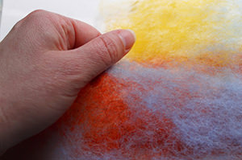

What is felt?
Felt is a non-woven, versatile and natural fabric made from sheep wool and different animal fibres. This ancient craft is originated from Asia and hugely contributed to the living and surviving of the nomadic tribes.
Making handmade felt from wool fibre is a magical but simple process, requiring very little equipment such as wool, water and soap. It has a tactile nature and it is a powerful multi-sensory experience
The maker pull gently small, thin puffs of wool need to tear of fibre staples of the supply and laying down two or three layers of fibre. The soft fibres staples will almost melt in the hand. More texture can be created by decorating the surface with yarns, fabrics, ribbons, silk or any other fibres, and anything to be able to attach in the fibre. Warm soapy water is applied to the layers of animal hairs. During feltmaking the maker need to gently rub, stroke and massage the fibres into one piece, invest of lot of armpower into the rhythmical rolling, and finally release all the energy through the throwing process to make the felt a steady textile.